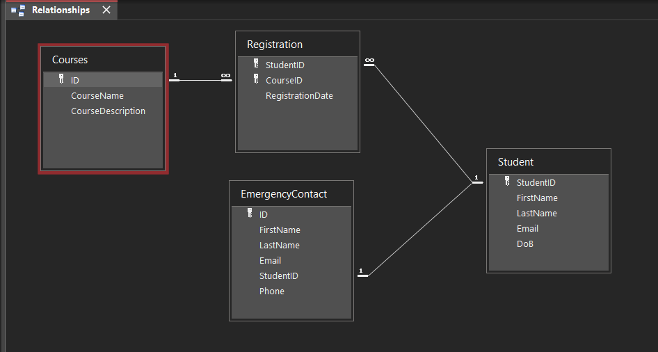

Relational Databases
A collection of data & info organized into tables with columns and rows.
Situation description has nouns, verbs, and modifiers.
Every table should have a unique id.
Table Types:
NN : Not Null.
ND : No Duplicates.
PK : Primary Key.
FK : Foreign Key.
Primary Keys :
Every table must have a primary key.
Primary keys must not be null, must never be duplicated.
Multi-column primary key cans have duplicates in each single column, never in all columns combined.
Primary keys must never be changed, for example a user can never change their email, but they can delete it and remake it, or make a new email all together.
Noun: Identify the things we need to keep info about.
Verbs: Show how these things relate to or interact with each other.
Modifiers: Are individual data items that describe each of the thing in more detail.
Entity: Name of table including all fields.
Body: Record.
Relation : Is connection between two tables.
Attributes: A field in a table.
Primary Key: Unique ID of a table.
Foreign Key: The unique id of another table, but can be unique.
Composite Key: Usually has many - to - many relationships.
Say if there was no unique key , you can combine multiple fields of keys to make a unique an entry.
Table Rules:
1. Table names must be unique.
2. Column names must be unique within a table.
3. Rows must be unique.
4. Columns must be non-decomposable. Should be as small as possible (ie. Name should be split in firstName and lastName)
5. Columns and Rows can be in any order.
Relationship details:
1:1 The entity and object can only have 1 relationship.
ie. License plate can only be assigned to one car, and a car can only be assigned to one license plate.
1:M Entity one can have many relationships with an object that can only have 1 relationship with entity / vice versa.
ie. A student can have
M:M Entity and Object may both have multiple relationships.
ie. A Purchase order can have multiple items, and Users can have multiple Purchases.
Entity Relationship Diagram (erd)

Normalization: is the steps/rules/practice to reduce redundancy and null values truly.
NF (stand for Normal Form)
Developed by DR. E.F. Codd from IBM in 1970.
A progressive refinement of database structures.
Transforms complex data structures into simple data structs.
To minimize redundant data.
Minimize NULL values.
Enable Extensions without needing major redesign.
minimize modification anomalies.
Make queries easier and less limited.
Three main forms of normalization:
First Normal Form: No repeating columns. Primary key must be unique.
Second Normal Form: Every non key column identified by the entire primary key. (this comes into effect when we have a multi-column primary key)
Third Normal Form: Every non key column depends on only the primary key.
If a non-key column is uniquely identified by another non-key column it should be moved to a table that is keyed by that column.
What is an Entity Relationship Diagram
A map of a database that shows all the relationships between the different tables inside the database.
- A variety of formats.
- No single industry standards.
- Each company will have its own standard depending on the tool they use.
You can use Draw.IO or Microsoft Visio to create an ERD.
ER Diagram Attributes:
- Listed below Entity name.
# : Unique identifier.
* : Mandatory attribute.
o : Optional attribute.
example:
Product Table = {
#* SKU, (must be unique, and is mandatory)
ProductName,
o Description Name,
}
Common naming conventions used in ERD.
1 (can only have 1 emergency contact and is required)
0-1 (is optional to choose)
1-M (must have atleast 1) (same as below)
1-* (must have atleast 1)
Entity relationship symbols :
Crowfoot = Many
| Dash = 1 Mandatory.
0 = zero / optional.
0 | = Can have 0 to 1.
0 Crowfoot = can have 0 to many